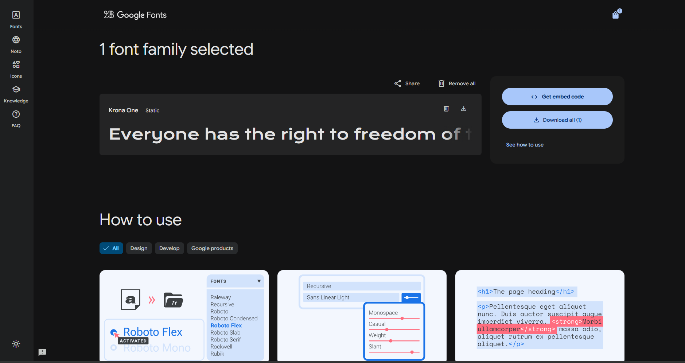
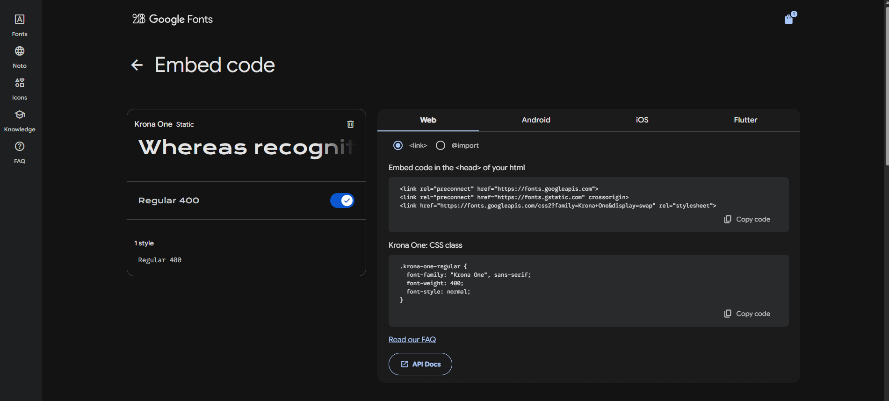

Por link
Para peagr tem que ir no google fonts, pesquisar a fonte desejada e copiar o link para o HTML.
- Ir no google fonts
- Pesquisar a fonte desejada
- Clicar na fonte e depois clicar em "select this style"
- Clicar no icone de link e copiar o link para o HTML

- Vá em "Get embed code"

- escolhe se vai ser link ou import
- se link: copia e cola no HTML
- se import: copia e cola no CSS
Baixando a fonte
Para baixar a fonte tem que ir no google fonts, pesquisar a fonte desejada e clicar no icone de download.
- Ir no google fonts
- Pesquisar a fonte desejada
- Clicar na fonte e depois clicar em "select this style"
- Clicar no icone de download e baixar a fonte
Depois de baixar a fonte, tem que descompactar o arquivo e colocar a pasta da fonte dentro do projeto.
Depois disso, tem que usar a regra @font-face para declarar a fonte no CSS.
@font-face {
font-family: 'Nome da fonte';
src: url('caminho/para/a/fonte.ttf') format('truetype');
}
Depois de declarar a fonte, é só usar o nome da fonte na propriedade font-family para aplicar a fonte no elemento desejado.